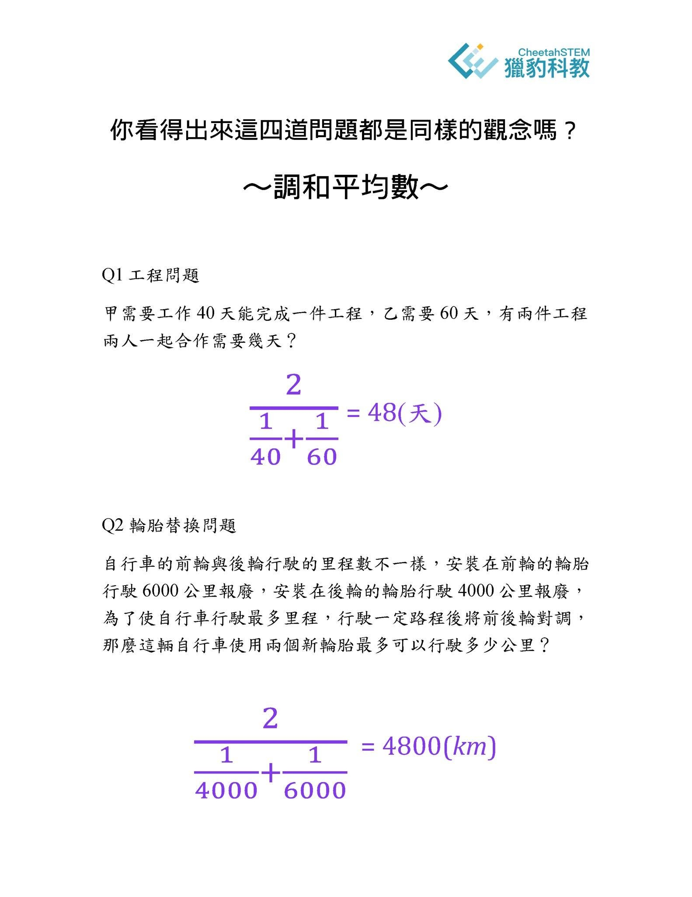
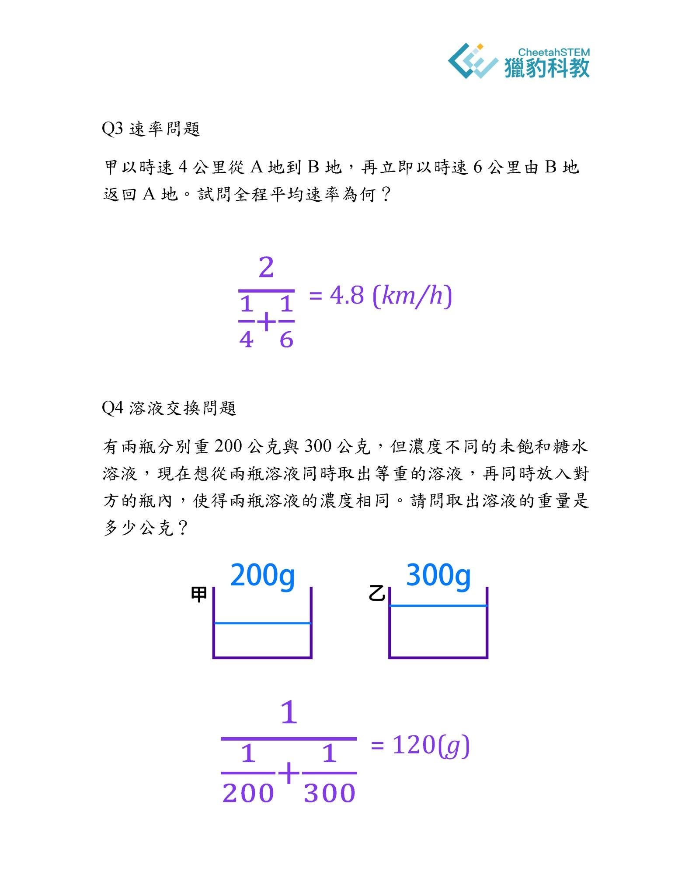

⼩學⽣的數學啟蒙教育，需要⾼⽔平的師資嗎？
一個常被忽略，甚至誤判卻攸關孩子一生學習以及潛能開發的重要問題：
⼩學⽣的數學啟蒙教育，需要⾼⽔平的師資嗎？
先說結論——需要❗而且非常需要‼
⾸先，對於啟蒙教育有⼀種普遍的迷思,
很多人以為：小學階段，老師只要能夠講解基本作業，就足夠了。
所謂的小學找小師就好，中學找中師，等到大學或研究所再找「大師」。
這種迷思主要是源⾃於兩個錯誤認知。
第⼀種錯誤認知：家長把「數學啟蒙教育」理解成單純的「知識與技巧的灌輸」。
其實，數學的啟蒙教育的重點不是為了追求考試分數的「知識的灌輸 」與「技巧的熟練」，
⽽是
核⼼推理能⼒的建⽴
專家思維模式的養成
科學⽅法的訓練
這些都仰賴高素質的師資，給予良好的訓練與刺激，專業科學化的教學，讓大腦形成綿密高效的優質神經網絡。
第⼆種錯誤認知：低齡階段的數學，知識量少，而且淺顯易懂，因此老師不需要高水平的學養與高層次的眼光。
俗話說「學⽣⼀杯⽔，⽼師⼀缸⽔。」
看待⼀道數學問題，其實有「⾼度」與「品味」的差異。
以「雞兔問題」為例，可以用小學生的遊戲方法解決，也可以使用國中的聯立方程式甚至高中的矩陣來求解，我們也可以放在大學『線性代數』的框架下來討論。
想像兩種帶路⽅式：
一種是在巷弄裡左轉右拐，反覆訓練，讓孩子記住一條條的路線「怎麼走」；
另一種則是帶他坐上直升機，俯瞰整座城市，全盤理解道路設計的規則，讓他一目瞭然：「為什麼要這麽走」。
這裡舉⼀個例⼦（下圖）
我羅列了四道數學應用題（它們一般常見於小六～國一的 資優/私中/輕競賽題）。
在一般的常態教學中，這四個題目被分散在不同觀念的主題，甚至也使用了不同形式的算式來求解。
因此學生必需學習四種不同的題型❗
這種瞎子摸象的教學風格，就無可避免地需要學生海量刷題。
而且如此支離破碎的「數學觀念」如何能支撐未來越趨複雜、疊加、困難 的學習⁉️
勢必導致後來的系統性崩潰‼
然而獵豹可以僅用一個觀念便貫穿這四道問題（所謂吾道一以貫之），而且解題的算式也統一了形式：都是調和平均數。
這種⾵格便是獵豹強調的「舉⼀反三、舉⼀反⼗」。
也正因為如此，上過獵豹課程的同學都領教了，獵豹的作業/習題數量遠少於其他機構。
獵豹學子中許多家長的素質都非常高：有頂大的教授、名校博士、教學醫院的醫師、著名高科技業的工程師…
他們成功的人生經驗、卓越的見識，深刻地體認到：「啟蒙教育的教師水平至關重要，影響深遠‼」
天才數學家阿貝爾提醒我們：「在每一個階段，學生都需要最好的老師指引。」
他的提醒給了這個問題最好的註腳。

